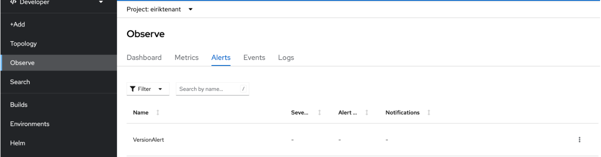

Configuring Monitoring for A Tenant
Prerequisites
- An OpenShift tenant created by Sopra Steria
Introduction
Prometheus alerts help ensure the health and reliability of your systems by allowing you to define rules and respond quickly to issues. By understanding the alerting workflow and using Alertmanager for notifications, you can build an effective alerting setup in OpenShift.
This user guide will provide you with further insights and detailed instructions on managing and creating alerts in Openshift.
Overview of Alerts
We have created a set of alerts tailored to enhance your monitoring and alerting capabilities within your Prometheus environment. These alerts are designed to help you proactively detect issues. Below, we provide an overview of the various alert groups we've developed for you to use. Each group is carefully crafted to address specific aspects of your infrastructure and applications, empowering you to take action swiftly when needed. Explore the following alert groups to gain deeper insights into your monitoring and make informed decisions.
Job & CronJob Alerts
- This group of alerts focuses on monitoring Kubernetes jobs and cron jobs. These alerts help you keep track of job and cron job executions and potential issues.
KubernetesJobFailed: This alert triggers when a Kubernetes job fails to complete.KubernetesCronjobSuspended: This alert triggers when a Kubernetes CronJob is suspended.KubernetesCronjobTooLong: This alert triggers when a Kubernetes CronJob takes too long to complete.KubernetesJobSlowCompletion: This alert triggers when Kubernetes Job has not completed all expected tasks (completions) within 12 hours.
Storage Alerts
- This group of alerts focuses on monitoring Kubernetes storage and persistent volume claims. These alerts help you maintain storage reliability.
KubernetesPersistentvolumeclaimPending: This alert triggers when a PersistentVolumeClaim is in a pending state.KubernetesVolumeOutOfDiskSpace: This alert triggers when a volume is almost full.KubernetesVolumeFullInFourDays: This alert triggers when a volume is expected to fill up within four days.KubernetesPersistentvolumeError: This alert triggers when a Persistent Volume is in a bad state.
ReplicaSets Alerts
- This group of alerts focuses on monitoring Kubernetes ReplicaSets. These alerts help you maintain the desired number of replicas.
KubernetesReplicasetReplicasMismatch: This alert triggers when a Kubernetes ReplicaSet's desired replicas do not match the ready replicas.
Deployments Alerts
- This group of alerts focuses on monitoring Kubernetes Deployments. These alerts help you ensure that your deployments are running smoothly.
KubernetesDeploymentReplicasMismatch: This alert triggers when a Kubernetes Deployment's desired replicas do not match the available replicas.
StatefulSets Alerts
- This group of alerts focuses on monitoring Kubernetes StatefulSets. These alerts help you ensure the correct behavior of your StatefulSets.
KubernetesStatefulsetReplicasMismatch: This alert triggers when a Kubernetes StatefulSet's ready replicas do not match the total replicas.KubernetesStatefulsetGenerationMismatch: This alert triggers when a Kubernetes StatefulSet's observed generation does not match its metadata generation for more than 10 minutes.KubernetesStatefulsetUpdateNotRolledOut: this alert trigger when a Kubernetes StatefulSet update has not been fully rolled out for more than 10 minutes.KubernetesStatefulsetDown: This alert triggers when a Kubernetes StatefulSet goes down.
Resource Quota Alerts
- This group of alerts focuses on monitoring resource quota usage within namespaces. These alerts help ensure that resource limits are respected to maintain the stability of the cluster.
MemoryUsageExceeded: This alert triggers when memory usage in a namespace exceeds 95% of the defined hard limit for 15 minutes.CpuUsageExceeded: This alert triggers when CPU usage in a namespace exceeds 95% of the defined hard limit for 15 minutes.MemoryRequestsExceeded: This alert triggers when the actual memory usage in the namespace exceeds 95% of the defined hard requests for 15 minutes.CpuRequestsExceeded: This alert triggers when the actual CPU usage in the namespace exceeds 95% of the defined hard requests for 15 minutes.
Pod Alerts
- This group of alerts focuses on monitoring Kubernetes containers. These alerts help you stay informed about container-related issues that may affect your applications.
KubernetesContainerOomKiller: This alert triggers when a Kubernetes container is OOM-killed.KubernetesPodNotHealthy: This alert triggers when a pod is not healthy.KubernetesPodCrashLooping: This alert triggers when a pod is in a crash-loop.
HPA Alerts
- This group of alerts focuses on monitoring Kubernetes workloads, including StatefulSets, Horizontal Pod Autoscalers (HPAs), and pods. These alerts help you maintain the health and performance of your workloads.
KubernetesHpaScaleInability: This alert triggers when an HPA is unable to scale.KubernetesHpaMetricsUnavailability: This alert triggers when an HPA is unable to collect metrics.KubernetesHpaScaleMaximum: This alert triggers when an HPA reaches its maximum scaling limit.KubernetesHpaUnderutilized: This alert triggers when an HPA is underutilized.
How to disable group alarms
To disable a group alert you need to set a group alert to false in your tenant configuration.
monitoring:
jobCronJobAlertsEnabled: false # Set to false to disable the JobCronJobAlerts group
storageAlertsEnabled: true
replicasSetsAlertsEnabled: true
deploymentsAlertsEnabled: true
statefulSetsAlertsEnabled: true
resourceQuotaAlertsEnabled: true
podAlertsEnabled: true
hpaAlertsEnabled: true
Configure your own alerts
If you want to make your own alerts you can do this by following the steps below.
Configure alerting rules for user-defined projects
Before you start configuring alerts for your project, please familiarize yourself with the best practices for alerting as described in best-practices. For a guide on how to create Prometheus rules using PromQL, please refer to the prometheus documentation.
Note
You will not be allowed to create resources directly in openshift-user-workload-monitoring, as this namespace is used across independent teams.
Steps
-
Create a YAML definition for the alerting rules you want to create providing the namespace of your choice.
-
Apply the alerting rule to the cluster. This should be done using GitOps to ensure tracability and transparency of configuration, as well as securing an automated setup if the tenant would have to be rebuilt at some point.
-
Verify that the alerting rules have been created by navigating to Observe --> Alerts for your project in the Developer view of the OpenShift console, as seen below. 
{kind=link}
Sending notifications to external systems
You have access to configuring your Alertmanager configuration specific to your project. As for the alerting rules, all objects are project-scoped, so configure all your projects with the desired notification rules.
Warning
Never store secrets in git. In the AlertmanagerConfig object below, you should reference secrets created using a secure secret handling system like sealed-secrets or external secrets. You should not type in authentication tokens or passwords directly in the AlertmanagerConfig object.
Steps
-
Create a YAML definition for the Alertmanager configuration you want to create. An example is found below:
-
Apply the alerting rule to the cluster. This should be done using GitOps to ensure traceability and transparency of configuration, as well as securing an automated setup if the tenant has to be rebuilt at some point.
- Verify that notifications are sent to the target when alerts are created. A routine for this will be documented shortly.
Alert code examples
Job & CronJob Alerts
alert: KubernetesJobFailed
expr: kube_job_status_failed > 0
for: 0m
labels:
namespace: {{ $.Values.namespace.name }}-{{ .name }}
severity: warning
annotations:
summary: 'Kubernetes Job failed (instance {{`{{ $labels.instance }})`}}'
description: "Job {{`{{ $labels.namespace }}`}}/{{`{{ $labels.job_name }}`}} failed to complete\n VALUE = {{`{{ $value }}`}}\n LABELS = {{`{{ $labels }}`}}"
alert: KubernetesCronjobSuspended
expr: kube_cronjob_spec_suspend != 0
for: 0m
labels:
namespace: {{ $.Values.namespace.name }}-{{ .name }}
severity: warning
annotations:
summary: 'Kubernetes CronJob suspended (instance {{`{{ $labels.instance }}`}})'
description: "CronJob {{`{{ $labels.namespace }}`}}/{{`{{ $labels.cronjob }}`}} is suspended\n VALUE = {{`{{ $value }}`}}\n LABELS = {{`{{ $labels }}`}}"
alert: KubernetesCronjobTooLong
expr: time() - kube_cronjob_next_schedule_time > 3600
for: 0m
labels:
namespace: {{ $.Values.namespace.name }}-{{ .name }}
severity: warning
annotations:
summary: 'Kubernetes CronJob too long (instance {{`{{ $labels.instance}}`}})'
description: "CronJob {{`{{ $labels.namespace }}`}}/{{`{{ $labels.cronjob }}`}} is taking more than 1h to complete.\n VALUE = {{`{{ $value }}`}}\n LABELS = {{`{{ $labels }}`}}"
alert: KubernetesJobSlowCompletion
expr: kube_job_spec_completions - kube_job_status_succeeded - kube_job_status_failed > 0
for: 12h
labels:
namespace: {{ $.Values.namespace.name }}-{{ .name }}
severity: critical
annotations:
summary: "Kubernetes Job failed (instance {{`{{ $labels.instance }}`}})"
description: "Job {{`{{ $labels.namespace }}`}}/{{`{{ $labels.job_name }}`}} failed to complete\n VALUE = {{`{{ $value }}`}}\n LABELS = {{`{{ $labels }}`}}"
Storage Alerts
alert: KubernetesPersistentvolumeclaimPending
expr: kube_persistentvolumeclaim_status_phase{phase="Pending"} == 1
for: 2m
labels:
namespace: {{ $.Values.namespace.name }}-{{ .name }}
severity: warning
annotations:
summary: 'Kubernetes PersistentVolumeClaim pending (instance {{`{{ $labels.instance }}`}})'
description: "PersistentVolumeClaim {{`{{ $labels.namespace }}`}}/{{`{{ $labels.persistentvolumeclaim }}`}} is pending\n VALUE = {{`{{ $value }}`}}\n LABELS = {{`{{ $labels }}`}}"
alert: KubernetesVolumeOutOfDiskSpace
expr: (kubelet_volume_stats_available_bytes / kubelet_volume_stats_capacity_bytes) * 100 < 10
for: 2m
labels:
namespace: {{ $.Values.namespace.name }}-{{ .name }}
severity: warning
annotations:
summary: 'Kubernetes Volume out of disk space (instance {{`{{ $labels.instance }}`}})'
description: "Volume is almost full (< 10% left)\n VALUE = {{`{{ $value }}`}}\n LABELS = {{`{{ $labels }}`}}"
alert: KubernetesVolumeFullInFourDays
expr: predict_linear(kubelet_volume_stats_available_bytes[6h:5m], 4 * 24 * 3600) < 0
for: 0m
labels:
namespace: {{ $.Values.namespace.name }}-{{ .name }}
severity: critical
annotations:
summary: 'Kubernetes Volume full in four days (instance {{`{{ $labels.instance }})`}}'
description: "Volume under {{`{{ $labels.namespace }}`}}/{{`{{ $labels.persistentvolumeclaim }}`}} is expected to fill up within four days. Currently {{`{{ $value humanize }}`}}% is available.\n VALUE = {{`{{ $value }}`}}\n LABELS = {{`{{ $labels }}`}}"
alert: KubernetesPersistentvolumeError
expr: kube_persistentvolume_status_phase{phase=~"Failed|Pending", job="kube-state-metrics"} > 0
for: 0m
labels:
namespace: {{ $.Values.namespace.name }}-{{ .name }}
severity: critical
annotations:
summary: 'Kubernetes PersistentVolume error (instance {{`{{ $labels.instance }})`}}'
description: "Persistent volume {{`{{ $labels.persistentvolume }}`}} is in a bad state\n VALUE = {{`{{ $value }}`}}\n LABELS = {{`{{ $labels }}`}}"
ReplicaSets Alerts
alert: KubernetesReplicasetReplicasMismatch
expr: kube_replicaset_spec_replicas != kube_replicaset_status_ready_replicas
for: 10m
labels:
namespace: {{ $.Values.namespace.name }}-{{ .name }}
severity: warning
annotations:
summary: 'Kubernetes ReplicaSet replicas mismatch (instance {{`{{ $labels.instance }})`}}'
description: "ReplicaSet {{`{{ $labels.namespace }}`}}/{{`{{ $labels.replicaset }}`}} replicas mismatch\n VALUE = {{`{{ $value }}`}}\n LABELS = {{`{{ $labels }}`}}"
Deployments Alerts
alert: KubernetesDeploymentReplicasMismatch
expr: kube_deployment_spec_replicas != kube_deployment_status_replicas_available
for: 10m
labels:
namespace: {{ $.Values.namespace.name }}-{{ .name }}
severity: warning
annotations:
summary: 'Kubernetes Deployment replicas mismatch (instance {{`{{ $labels.instance }})`}}'
description: "Deployment {{`{{ $labels.namespace }}`}}/{{`{{ $labels.deployment }}`}} replicas mismatch\n VALUE = {{`{{ $value }}`}}\n LABELS = {{`{{ $labels }}`}}"
StatefulSets Alerts
alert: KubernetesStatefulsetReplicasMismatch
expr: kube_statefulset_status_replicas_ready != kube_statefulset_status_replicas
for: 10m
labels:
namespace: {{ $.Values.namespace.name }}-{{ .name }}
severity: warning
annotations:
summary: 'Kubernetes StatefulSet replicas mismatch (instance {{`{{ $labels.instance }})`}}'
description: "StatefulSet does not match the expected number of replicas.\n VALUE = {{`{{ $value }}`}}\n LABELS = {{`{{ $labels }}`}}"
alert: KubernetesStatefulsetGenerationMismatch
expr: kube_statefulset_status_observed_generation != kube_statefulset_metadata_generation
for: 10m
labels:
namespace: {{ $.Values.namespace.name }}-{{ .name }}
severity: critical
annotations:
summary: 'Kubernetes StatefulSet generation mismatch (instance {{`{{ $labels.instance }})`}}'
description: "StatefulSet {{`{{ $labels.namespace }}`}}/{{`{{ $labels.statefulset }}`}} has failed but has not been rolled back.\n VALUE = {{`{{ $value }}`}}\n LABELS = {{`{{ $labels }}`}}"
alert: KubernetesStatefulsetUpdateNotRolledOut
expr: max without (revision) (kube_statefulset_status_current_revision unless kube_statefulset_status_update_revision) * (kube_statefulset_replicas != kube_statefulset_status_replicas_updated)
for: 10m
labels:
namespace: {{ $.Values.namespace.name }}-{{ .name }}
severity: warning
annotations:
summary: 'Kubernetes StatefulSet update not rolled out (instance {{`{{ $labels.instance }})`}}'
description: "StatefulSet {{`{{ $labels.namespace }}`}}/{{`{{ $labels.statefulset }}`}} update has not been rolled out.\n VALUE = {{`{{ $value }}`}}\n LABELS = {{`{{ $labels }}`}}"
alert: KubernetesStatefulsetDown
expr: kube_statefulset_replicas != kube_statefulset_status_replicas_ready > 0
for: 1m
labels:
namespace: {{ $.Values.namespace.name }}-{{ .name }}
severity: critical
annotations:
summary: 'Kubernetes StatefulSet down (instance {{`{{ $labels.instance }})`}}'
description: "StatefulSet {{`{{ $labels.namespace }}`}}/{{`{{ $labels.statefulset }}`}} went down\n VALUE = {{`{{ $value }}`}}\n LABELS = {{`{{ $labels }}`}}"
Resource Quota Alerts
alert: MemoryUsageExceeded
expr: (sum by (name)(openshift_clusterresourcequota_usage{type="used", resource="limits.memory", name="{{ $.Values.namespace.name }}"}) / sum by (name)(openshift_clusterresourcequota_usage{type="hard", resource="limits.memory", name="{{ $.Values.namespace.name }}"})) * 100 >= 95
for: 5m
labels:
namespace: {{ $.Values.namespace.name }}-{{ (index $.Values.environments 0).name }}
severity: warning
annotations:
summary: Memory usage for {{ $.Values.namespace.name }} exceeded 95%
description: Memory usage for {{ $.Values.namespace.name }} has reached or exceeded 80% of its hard limit.
alert: CpuUsageExceeded
expr: (sum by (name)(openshift_clusterresourcequota_usage{type="used", resource="limits.cpu", name="{{$.Values.namespace.name }}"}) / sum by (name)(openshift_clusterresourcequota_usage{type="hard", resource="limits.cpu", name="{{ $.Values.namespace.name }}"})) * 100 >= 95
for: 5m
labels:
namespace: {{ $.Values.namespace.name }}-{{ (index $.Values.environments 0).name }}
severity: warning
annotations:
summary: ClusterResourceQuota CPU Usage Exceeded for instance = {{`{{ $labels.name }}`}}
description: Resource {{ $.Values.namespace.name }} is using more than 95% of its hard limit for CPU. VALUE = {{`{{ $value }}`}}, LABELS = {{`{{ $labels.name }}`}}
alert: MemoryRequestsExceeded
expr: sum(sum(container_memory_working_set_bytes{job="kubelet", metrics_path="/metrics/cadvisor", cluster="", namespace=~"{{ $.Values.namespace.name }}.*", container!="", image!=""}) by (pod))/sum(openshift_clusterresourcequota_usage{resource="requests.memory", type="hard",name="{{ $.Values.namespace.name }}"}) * 100 >= 95
for: 5m
labels:
namespace: {{ $.Values.namespace.name }}-{{ (index $.Values.environments 0).name }}
severity: warning
annotations:
summary: Memory requests for {{ $.Values.namespace.name }} exceeded 95%
description: Memory requests for {{ $.Values.namespace.name }} has reached or exceeded 95% of its hard limit.
alert: CpuRequestsExceeded
expr: sum(sum by (namespace)(avg_over_time(pod:container_cpu_usage:sum{namespace=~"{{ $.Values.namespace.name }}.*"}[1h])))/sum(openshift_clusterresourcequota_usage{resource="requests.cpu", type="hard",name="{{ $.Values.namespace.name }}"}) * 100 >= 95
for: 5m
labels:
namespace: {{ $.Values.namespace.name }}-{{ (index $.Values.environments 0).name }}
severity: warning
annotations:
summary: ClusterResourceQuota CPU Requests Exceeded for instance = {{`{{ $labels.name }}`}}
description: Resource {{ $.Values.namespace.name }} is requesting more than 95% of its hard limit for CPU. VALUE = {{`{{ $value }}`}}, LABELS = {{`{{ $labels.name }}`}}
Pod Alerts
alert: KubernetesContainerOomKiller
expr: (kube_pod_container_status_restarts_total - kube_pod_container_status_restarts_total offset 10m >= 1) and ignoring(reason) min_over_time (kube_pod_container_status_last_terminated_reason{reason="OOMKilled"}[10m]) == 1
for: 0m
labels:
namespace: {{ $.Values.namespace.name }}-{{ .name }}
severity: warning
annotations:
summary: "Kubernetes Container oom killer (instance {{`{{ $labels.instance }})`}}"
description: "Container {{`{{ $labels.container }}`}} in pod {{`{{ $labels.namespace }}`}}/{{`{{ $labels.pod }}`}} has been OOMKilled {{`{{ $value }}`}} times in the last 10 minutes.\n VALUE = {{`{{ $value }}`}}\n LABELS = {{`{{ $labels }}`}}"
alert: KubernetesPodNotHealthy
expr: sum by (namespace, pod)(kube_pod_status_phase{phase=~"Pending|Unknown|Failed"}) > 0
for: 15m
labels:
namespace: {{ $.Values.namespace.name }}-{{ .name }}
severity: critical
annotations:
summary: 'Kubernetes Pod not healthy (instance {{`{{ $labels.instance }})`}}'
description: "Pod {{`{{ $labels.namespace }}`}}/{{`{{ $labels.pod }}`}} has been in a non-running state for longer than 15 minutes.\n VALUE = {{`{{ $value }}`}}\n LABELS = {{`{{ $labels }}`}}"
alert: KubernetesPodCrashLooping
expr: increase(kube_pod_container_status_restarts_total[1m]) > 3
for: 2m
labels:
namespace: {{ $.Values.namespace.name }}-{{ .name }}
severity: warning
annotations:
summary: 'Kubernetes pod crash looping (instance {{`{{ $labels.instance }})`}}'
description: "Pod {{`{{ $labels.namespace }}`}}/{{`{{ $labels.pod }}`}} is crash looping\n VALUE = {{`{{ $value }}`}}\n LABELS = {{`{{ $labels }}`}}"
HPA Alerts
alert: KubernetesHpaScaleInability
expr: kube_horizontalpodautoscaler_status_condition{status="false", condition="AbleToScale"} == 1
for: 2m
labels:
namespace: {{ $.Values.namespace.name }}-{{ .name }}
severity: warning
annotations:
summary: 'Kubernetes HPA scale inability (instance {{`{{ $labels.instance }})`}}'
description: "HPA {{`{{ $labels.namespace }}`}}/{{`{{$labels.horizontalpodautoscaler }}`}} is unable to scale\n VALUE = {{`{{ $value }}`}}\n LABELS = {{`{{ $labels }}`}}"
- alert: KubernetesHpaMetricsUnavailability
expr: kube_horizontalpodautoscaler_status_condition{status="false", condition="ScalingActive"} == 1
for: 0m
labels:
namespace: {{ $.Values.namespace.name }}-{{ .name }}
severity: warning
annotations:
summary: 'Kubernetes HPA metrics unavailability (instance {{`{{ $labels.instance }})`}}'
description: "HPA {{`{{ $labels.namespace }}`}}/{{`{{ $labels.horizontalpodautoscaler }}`}} is unable to collect metrics\n VALUE = {{`{{ $value }}`}}\n LABELS = {{`{{ $labels }}`}}"
alert: KubernetesHpaScaleMaximum
expr: kube_horizontalpodautoscaler_status_desired_replicas >= kube_horizontalpodautoscaler_spec_max_replicas
for: 2m
labels:
namespace: {{ $.Values.namespace.name }}-{{ .name }}
severity: info
annotations:
summary: 'Kubernetes HPA scale maximum (instance {{`{{ $labels.instance }})`}}'
description: "HPA {{`{{ $labels.namespace }}`}}/{{`{{ $labels.horizontalpodautoscaler }}`}} has hit the maximum number of desired pods\n VALUE = {{`{{ $value }}`}}\n LABELS = {{`{{ $labels }}`}}"
alert: KubernetesHpaUnderutilized
expr: max(quantile_over_time(0.5, kube_horizontalpodautoscaler_status_desired_replicas[1d]) == kube_horizontalpodautoscaler_spec_min_replicas) by (horizontalpodautoscaler) > 3
for: 0m
labels:
namespace: {{ $.Values.namespace.name }}-{{ .name }}
severity: info
annotations:
summary: 'Kubernetes HPA underutilized (instance {{`{{ $labels.instance }})`}}'
description: "HPA {{`{{ $labels.namespace }}`}}/{{`{{ $labels.horizontalpodautoscaler }}`}} has hit the maximum number of desired pods\n VALUE = {{`{{ $value }}`}}\n LABELS = {{`{{ $labels }}`}}"